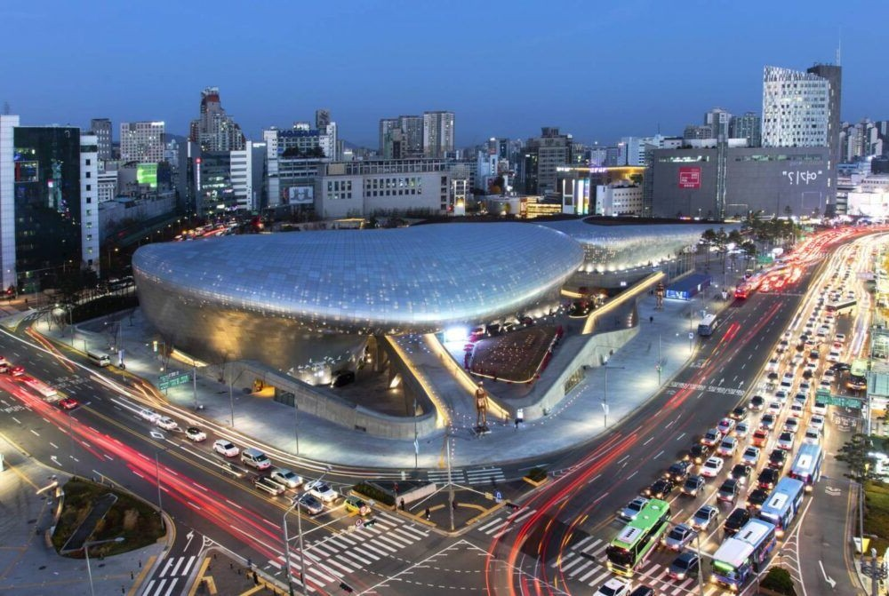

Stay & transport base
住宿交通基準：東大門歷史文化公園站
동대문역사문화공원역｜地鐵 2、4、5 號線。每日交通提示皆以此站作為出發與回程基準，三條路線對市廳、乙支路與首爾各區都很方便。
暫定參考飯店：Jongno／Dongdaemun Lumia Tourist Hotel
訂房前請注意：目前查到的 Lumia Tourist Hotel 位於新設洞站（1、2 號線／牛耳新設線）6 號出口步行約 4 分鐘，距東大門歷史文化公園約 1.3 公里，並不是同一站。飯店尚未確定前，本站仍以東大門歷史文化公園站規劃。